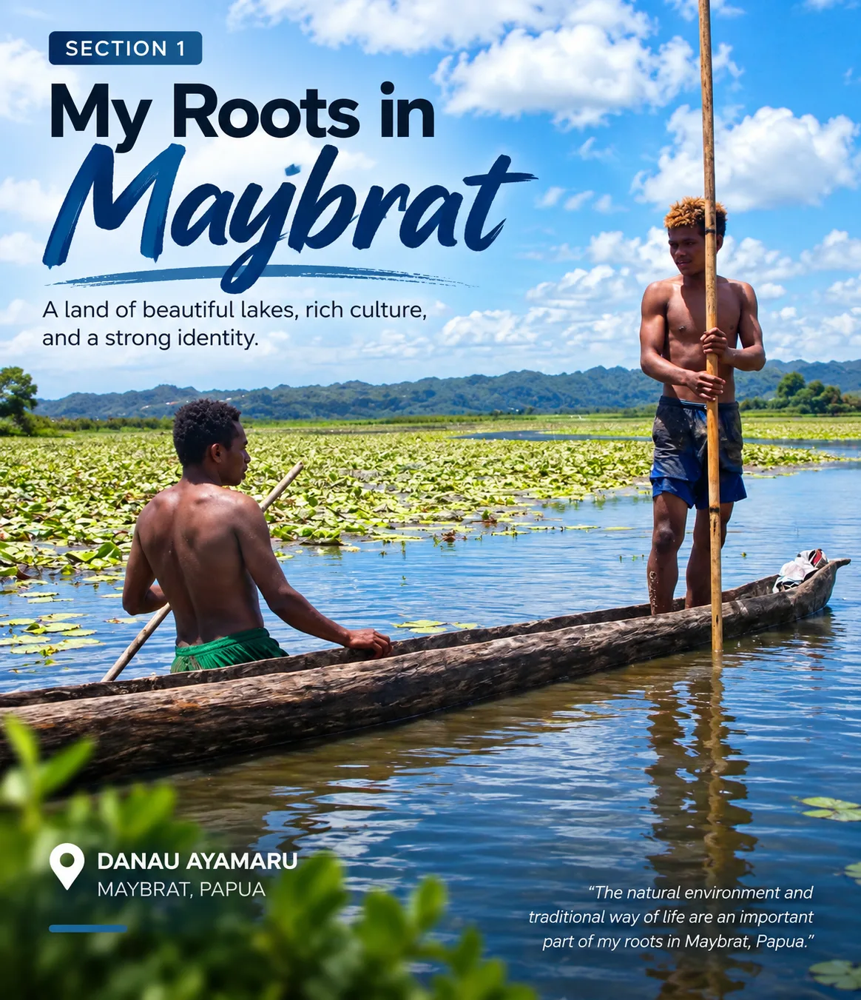
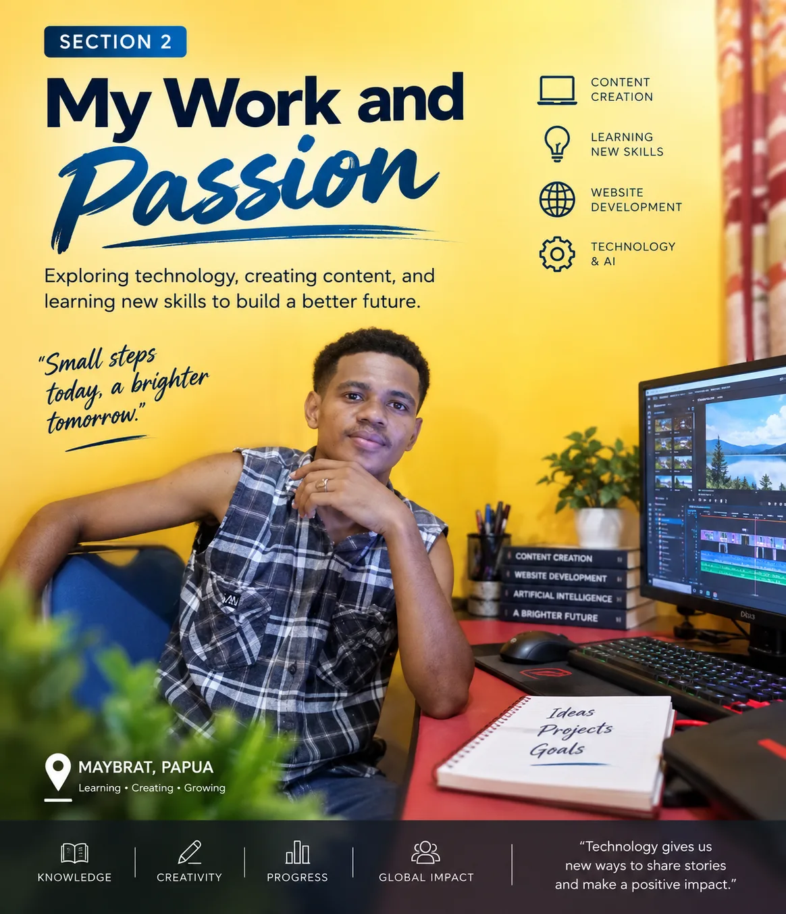
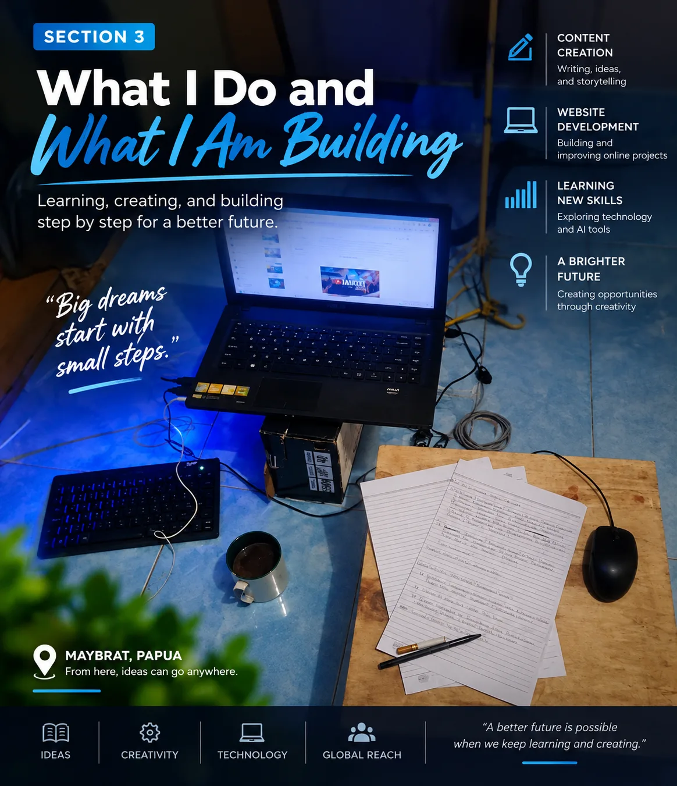

Every person has a story shaped by where they come from, the experiences they have lived through, and the dreams they continue to pursue. My story begins in Maybrat, Papua, and continues through my journey of learning, working, creating, and exploring the digital world.
My Roots in Maybrat
I come from Maybrat, Papua, a place with a rich natural environment and a strong cultural identity. Growing up with the beauty and character of Papua has been an important part of who I am and how I see the world.
One of the places that represents the beauty of my homeland is Lake Ayamaru. Its natural scenery is part of the landscape that makes the Maybrat region special. The place where we come from can become an important part of our identity, memories, and personal story.
My roots continue to remind me of where my journey began. Wherever life takes me, Maybrat and Papua will always be an important part of my story.

My Work and Passion
Throughout my journey, I have learned that hard work, patience, and the willingness to keep learning are important in building a better future.
Besides my work and daily responsibilities, I have developed a strong interest in the digital world. Technology has opened new opportunities for creativity, learning, communication, and sharing ideas with people beyond my local environment.
I enjoy exploring new technologies and learning how different digital tools can be used to create something meaningful. This interest has encouraged me to continue developing my skills and experimenting with new ideas.

What I Do and What I Am Building
Today, I spend much of my time learning and working in the digital world. I create and manage online content, build websites, experiment with artificial intelligence tools, and explore different ways to share stories and ideas with people around the world.
I work on projects involving digital publishing, social media content, AI-generated images and videos, website development, and online platforms. Through these projects, I continue learning how technology can be used to create useful, interesting, and engaging content.
I am also building my own digital projects step by step. Some of them focus on stories, technology, creativity, and online publishing. The process is not always easy, but every project gives me an opportunity to learn something new and improve my skills.
My goal is not simply to create content. I want to build something that can continue growing over time. By combining creativity, technology, and consistent learning, I hope to create digital projects that can reach people from different parts of the world.

My story is still being written. I come from Maybrat, Papua, and the experiences of my life continue to shape the person I am becoming. From the beauty of Ayamaru to the growing world of digital technology, my journey has taught me to keep learning, creating, and moving forward. I do not know exactly where this journey will take me, but I believe every small step matters. I will continue building, learning, and creating with the hope that the things I make can reach people and inspire them in their own journeys. The future is still ahead, and there is always something new to learn, something new to create, and another step to take.